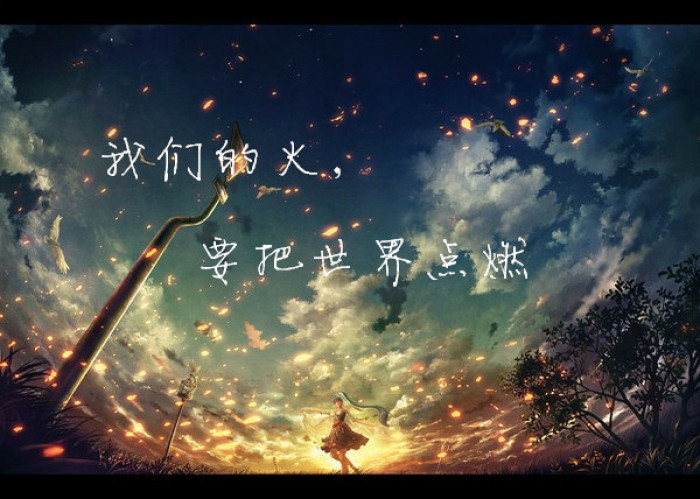
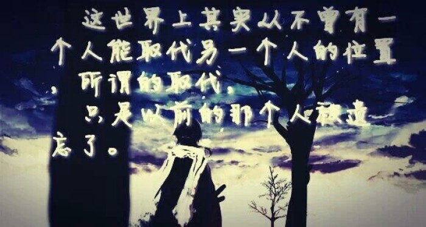

九州
九州缥缈录
文章作者：江南 小说更新时间：2011年6月2号
《九州缥缈录》基本上是一部关于人族的长篇。主要描写北陆游牧部落和东陆王朝的争霸史，夸父和河络等族较少出现在该长篇中，和羽族会有一些边境城市的争夺，但是不牵扯羽族的内务。只有羽族被废黜的公主羽然作为主角之一登场。
"九州是一个梦想。是天空里的第一滴水，我们希望它能变成海洋。 九州是由中国人来创造的一个奇幻世界，所以它一出生就从血脉中具有了东方的神韵，缥缈录就是其中之一，一部承载光荣和梦想的书。"
江南，真名杨治，男，安徽合肥人。“九州七天神”之一，
九州志
主编。70年代后出生，现居北京，已婚。北京大学化学与分子工程学院本科毕业，美国华盛顿大学Washington University硕士，专业分析化学。2010年的身份是作者，以及媒体经理。负责三本杂志的投资、定位和发行。并未受过任何正规的写作培训，亦未获得文学奖项。至今依然在工作之余写作，有时成稿极快，有时拖稿无期（自称“the king of the keng”），取决于工作松紧和一时的精神状态。
自云常常不务正业、笔耕不辍，游走于冰冷的实验仪器与温润的感性文字之间，向往着一只背包走天下的自由生活。在网上主要活动地为清韵书院。1998年开始创作，2002年《此间的少年》风靡网络内外，被网易文化誉为“新言情主义掌门人”(此种评说不过是噱头而已，正如他的《死神》被出版商改成了恶俗的《爱死你》。但江南的小说中的确是比较重视对爱情的描写)。
作品以架空小说和幻想小说为主，早期写过许多武侠作品。
龙族系列
龙族
文章作者：江南 小说首次出版时间：2010年4月
《龙族》是
作家江南
创作的系列长篇魔幻小说，由《龙族Ⅰ火之晨曦》、《龙族Ⅱ悼亡者之瞳》、《龙族Ⅲ黑月之潮》、《龙族Ⅳ奥丁之渊》组成，2009年10月1日开始在小说绘上连载，第一部于2010年04月首次出版，第二部于2011年05月出版，第三部上篇于2012年12月出版，第三部中篇于2013年07月出版，第三部下篇于2013年12月出版，第四部则于2015年10月出版。
作品讲叙了少年路明非在申请国外大学时收到了来自芝加哥远郊处的一所私立大学:卡塞尔学院的邀请函，随着路明非同学坐上去往芝加哥的CC1000次列车，踏上了与龙族争锋的征程。
- 路明非&上杉绘梨衣
- 楚子航&夏弥
- 凯撒&陈墨瞳
龙族经典语录
我们的火，要把世界点燃
并非被取代，只是被遗忘
我很知足，要的并不多
有因，便有果
绝望的人，将所向无敌
边长大，边失去
无论千军万马，还是孤军奋战
落尽红樱君不见，轻绘梨花泪沾衣